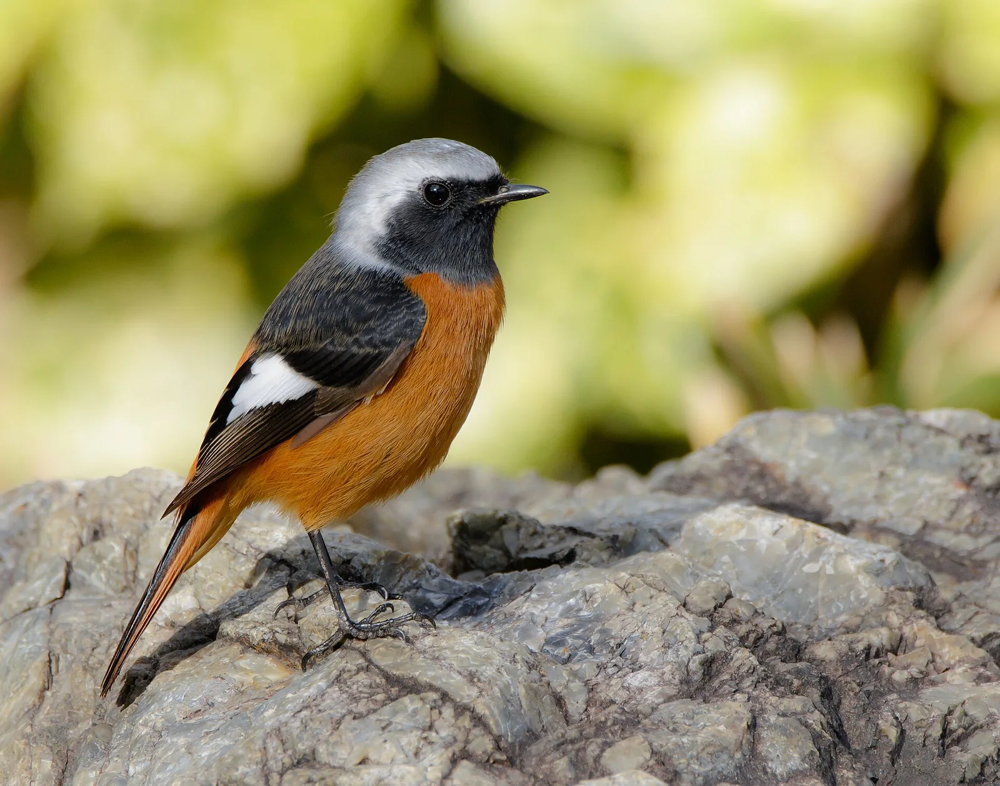

Back to the indexNO. 016 · Songbirds & City Birds / Muscicapidae · Chats & Flycatchers
Daurian Redstart
北红尾鸲 · běi hóng wěi qú Phoenicurus auroreusAn orange-red tail that vanishes into the bushes
The male is carefully turned out: silver crown, black face, orange-red belly, plus a white patch on the wing. It sits low or on the ground, flicking its tail — a flash of orange-red and you know what it is.
Gallery
One scientific illustration for shape and colour blocks, two field photographs for how it looks in real light. Click any image to enlarge.
Identification
- MaleCrown to nape silvery grey; face, throat and back black; breast and belly orange-red; a bold white wing patch; tail orange-red.
- FemaleGrey-brown above, pale brown below, with the same white wing patch and an orange-red tail — tail colour is the key to the female.
- ShapePlump, often perched leaning forward, tail flicked up and down constantly and occasionally spread.
- BehaviourTypically flies from a low perch down to the ground for insects and returns to the same perch, on a predictable route.
Behaviour
A classic sallying feeder: watches from a low perch, drops onto insects, returns to the same spot. Fairly tame and approachable in parks. A winter visitor here from October to April in city parks, forest edges and villages; usually alone, territorial and quick to chase its own kind.
Voice
A short 'tick-tick' or 'hweet', slightly husky; a rattling 'churr' when alarmed.
Where to find it in Zhuhai
- Xiangshan Lake Park shrubberies
- Banzhang Hill trails
- Yeli Island understorey
- SYSU campus